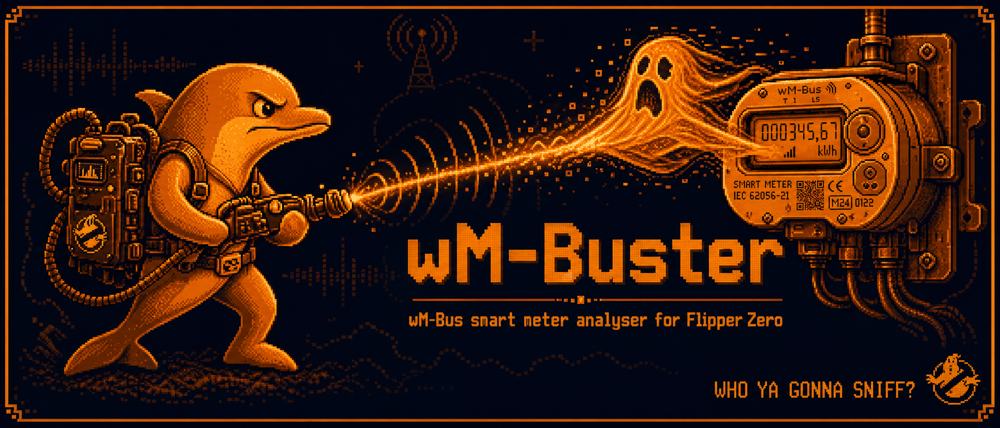
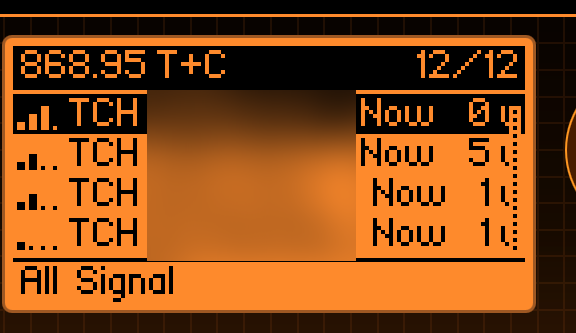
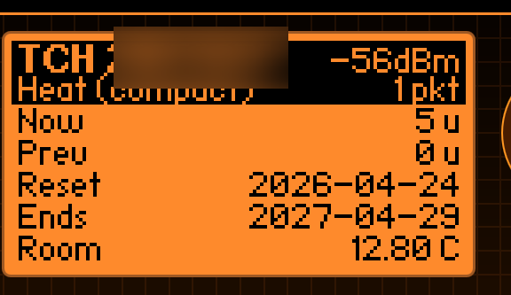

Flipper Zero · 868 MHz · receive-onlyA passive wireless M-Bus listener that decodes heat, water, gas, electricity and heat-cost-allocator telegrams on the 868 MHz band — using the on-board CC1101 or an external GPIO module.



What it does
Pure receive, no transmit. Built around the CC1101's chip-level FIFO and a software slicer that handles every OMS-compliant link mode used in the EU.
Four EU modes
T1 (3-of-6), C1 (NRZ Format A/B auto-routed), combined T+C on a single chip config, and S1 Manchester.
EN 13757-3 walker
DIF/VIF parser covering energy, volume, mass, power, flow, temperatures, pressure, dates, HCA units, and more.
AES-128 mode 5
Drop a keys.csv on the SD card and encrypted meters automatically decrypt to readable rows on screen.
Manufacturer drivers
Techem, Kamstrup, Diehl/IZAR, Qundis/ista/Brunata, BMeters, Engelmann, Sontex, Zenner, Apator, GWF, BFW…
SD logging
Raw and parsed telegrams streamed to /ext/apps_data/wmbuster/ for offline analysis with rtl_433 or wmbusmeters.
Install
.fap for every release on the
Releases page.
Drop wmbuster.fap into /ext/apps/Sub-GHz/ on
your Flipper's SD card and launch from
Apps → Sub-GHz → wM-Buster.
Build from source
# install ufbt (Flipper's build tool)
pip install --upgrade ufbt
ufbt update --channel=release
# clone & build
git clone https://github.com/i12bp8/wmbuster.git
cd wmbuster
ufbt # produces dist/wmbuster.fap
ufbt launch # flash + start on a connected Flipper
# run host-side regression tests (no Flipper required)
make -C tests checkMode selection
T+C is the default and runs both T-mode (3-of-6) and C-mode (NRZ Format A & B) on a single chip configuration via post-sync byte detection.
| Mode | Frequency | Bit rate | Encoding | Notes |
|---|---|---|---|---|
| T1 | 868.95 MHz | 100 kchip/s | 3-of-6 | Older Techem firmware |
| C1 | 868.95 MHz | 100 kbit/s | NRZ Format A/B auto | Newer Techem, most Kamstrup |
| T+C | 868.95 MHz | 100 kbit/s | T1 or C1, auto-detect | Default — broadest |
| S1 | 868.30 MHz | 32.768 kbit/s | Manchester | Legacy water / gas |
Contribute
Adding a manufacturer driver is intentionally a small job — most are
one C file, ~50 lines: drop it in
drivers/europe/<vendor>/<name>.c, add it to
application.fam and the registry. A worked walkthrough
for porting from wmbusmeters lives in
drivers/CONTRIBUTING.md.
Legal & safety
wM-Buster is dual-use research software. Receive-only operation on 868 MHz is licence-exempt under ETSI EN 300 220 and equivalents, but operating the app remains your responsibility. You must not point it at meters you do not own without documented authorisation from the meter operator.